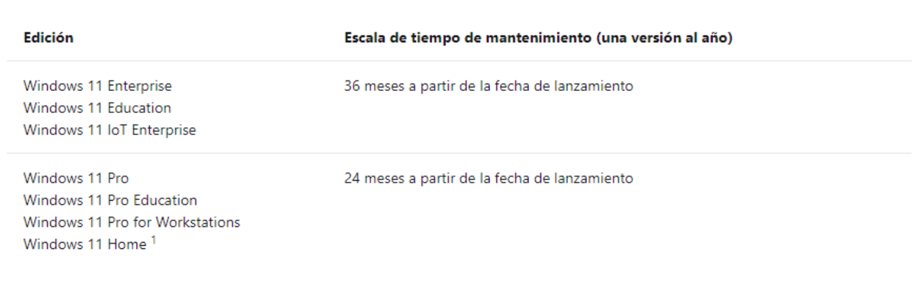

Actualización Importante
Con la llegada de Windows 11, Microsoft anunció que el sistema operativo tan esperado
solo iba a recibir una actualización importante al año.
Algo en lo que ya se diferencia con
Windows 10, que recibía dos actualizaciones al año (una cada 6 meses). Sin embargo,
estas actualizaciones que recibía Win10 dejaban bastante que desear en ciertas ocasiones,
provocando bugs y errores. El objetivo ahora con Win11 es reducir esas actualizaciones
pero ofrecer, a su vez, una de mayor calidad.
Por lo que, Windows 11 tendrá una cadencia de actualización de características anual.
Las actualizaciones de características de Win11 se publicarán en la segunda mitad del año
natural.
Soporte
Tendrá 24 meses de soporte técnico para las ediciones: Home, Pro, Pro for Workstations
y Pro Education.
Y 36 meses de soporte técnico para las ediciones: Empresa y Educación.

¿Cuándo llegara la actualización?
La próxima gran actualización de Win11 ya tiene fecha, llegaría en el verano de 2022,
llamada 22H2. Se trata de la primera gran actualización desde que llegó al mercado en
2021. La versión actual es la 21H2 (original release).
La actualización no ha sido anunciada oficialmente por Windows, sino que se tratan de
fuentes externas pero fiables. El objetivo es, en principio, pulir detalles del lanzamiento de
Win11 que no pudieron ser desarrollados o pulidos a tiempo por el temprano lanzamiento de
la versión.
Una vez haya salido, la actualización será tan fácil de descargar como ir a la barra de tareas
de Windows y escribir: Buscar actualizaciones
Esto nos llevará al centro de actualizaciones de Windows, donde nos saldrá si tenemos
alguna versión pendiente para instalar. Le daremos a descargar y se instalará
automáticamente, aunque será necesario reiniciar el equipo.
Desde Microsoft recomiendan empezar a implementar cada actualización de características
lo antes posible para obtener acceso a nuevas características, experiencias y seguridad
integrada.
Esto no significa que solo vaya a haber una única actualización al año, hasta ahora hemos
estado hablando de las actualizaciones de características pero no hay que olvidarse de
las actualizaciones de calidad:
-
Actualizaciones de calidad:
Por lo general, se liberan el segundo martes de cada
mes, aunque se pueden liberar en cualquier momento. Las actualizaciones de
calidad incluyen actualizaciones de seguridad, actualizaciones críticas,
actualizaciones de pila de servicio y actualizaciones de controladores. Las
actualizaciones de calidad son acumulativas, por lo que es suficiente instalar la
actualización de calidad más reciente para obtener todas las revisiones disponibles
de una determinada actualización de características de Windows.
-
Actualizaciones de caracteristicas:
Son actualizaciones que contienen nuevas
características. Una actualización de características también incluye todas las
actualizaciones de calidad anteriores, según corresponda.
-
Estos serían algunos ejemplos de actualizaciones de calidad: